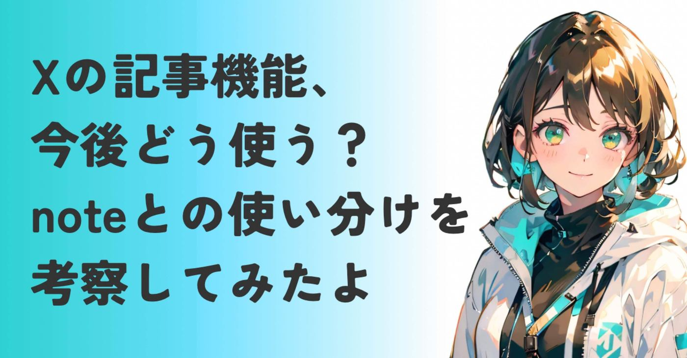
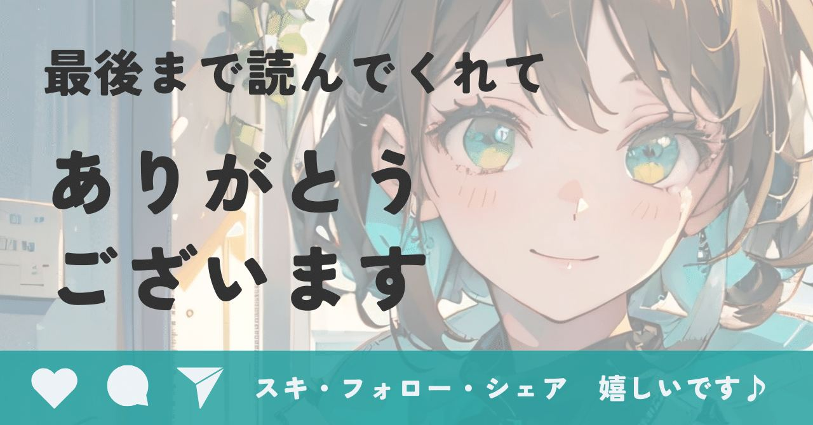

最近XのタイムラインでX Articles（記事機能）という新しい波が来てますね。
https://twitter.com/kensuu/status/2018111845840896010?s=46
私はnoteをメインに活動してるんで、
正直ちょっとざわつく存在です。
noteがあるから、別にいいかな？
でも外部リンクのインプレッションが下がっている今、Xでも書かないとヤバい…？？
気になる。ものすごく。
ここ数日悶々としてたんですが、私なりに今後Xとnoteでどう立ち回るべきかを考えてみたので、整理してみました。
いつもと違って書き殴りに近いので、雰囲気が違うのはご容赦ください。
痩せたいけれどメガマック、再び
以前、過去記事でインサイトの話をしました▼
https://note.com/alive_sheep6563/n/nb9c81a08b348
「ヘルシーなサラダで健康になりたい！」という建前の裏に隠れた、
「ジャンクなものを腹一杯食べたい！」という、本人すら無意識の本音の話でしたね。
実は今Xとnoteの間で揺れている心の中にも、これと似た矛盾が隠れてる気がします。
建前はたぶんこう▼
プラットフォームに縛られず、
最適な場所で、最適な表現をしたい
でもインサイト（本音）はきっとこれ▼
あちこち書くなんて面倒だし、
これ以上疲れるのもう無理。
でも読まれないのも嫌。
ちなみに私の本音です。
同じこと思ってる人、多いんじゃない？
そんなことない？そうですか…
それは置いておき、
noteクリエイターがXの記事機能をどう使うと良さげなのか、一緒に考えてみませんか？
Xというプラットフォームの現実
これまではXで新規読者を呼び込み、
noteを本編として使い分けてきたのが主流だったと記憶してます。
Xでチラ見せして、noteへ連れてくるスタイルですね。
ところがそのスタイルをXは根底から壊しにかかってますね。
Xのアルゴリズムは露骨に外部リンクを嫌っています。
ここ数年でその傾向が特に顕著になってきましたね。
noteに限らず外部のURLを貼ると、表示回数はガクンと落ちる。
起業現場で使ってきたリンクはリプライ欄に
というノウハウも、もうダメな気がして使ってません。
X側としては、
ユーザーを1秒たりとも、
外部プラットフォームに行かせない。
全部Xの中で完結させる。
というのが、おそらく記事機能がスタートした最大の意図ですよね。
X内で長文の記事が書けるようになると、
リンクを踏むという手間を省けるんで、
noteへの流入は確実に減ります。
noteユーザーとして確かに脅威だし、
どうしたもんかな…と思ってたんですが。
だからといってX の記事機能に全力投球すべきかというと、それはまた別の話。
今後はたぶんこうなる
「じゃあやっぱりXに引っ越すべきなの？」
というとそうでもないと思う。
とりあえず今後の発信方法は、以下のように
二極化すると予測します。
X を速報・拡散として利用
noteクリエイターから見ると、ファンを
増やす入り口という機能は同じかな。
noteはファンの深化・教育・収益の場
有料記事やコミュニティ運営など、売りたい
コンテンツが行き着く場所ですね。
本質的には今とそこまで大きく変わらない。
ではXの記事機能は具体的にどう使えるか？
というと、
① noteの過去記事をXへ
一番効率的なのはnoteで過去に反響があった記事を、X好みのタイトルに変えてリライトして投稿することですね。
ゼロから書く労力を最小化しつつ、Xのアルゴリズムに乗って、まだあなたを知らない新規層にリーチする。
すぐできるし、過去記事を掘り起こせるのは
大きなメリットですよね。
② 結論だけを置き、思考のプロセスは置かない
Xは刺激と結論を重視する場所ですよね。
だから、X の記事には結論や具体的なノウハウを置く。
で、その奥にある
なぜそう考えたのか？
どんな葛藤があったのか？
という人間味がにじみ出る思考のプロセスは、noteに置くようにする。
記事機能ができたからといって、
Xのフロー型のプラットフォームの特性自体はすぐに変わるものではないでしょうし、
noteは本編
Xの記事はnoteの概要
Xのポストは結論
くらいの使い分けはあってもいいかなと。
今までのスタイルの延長線？
中間使いみたいな感じですかね。
③ オススメしない方法。Xで自己完結
X で読者を完全に満足させちゃったら、読者はnoteまで来てくれないですよね。
やっぱり情報量に差をつけるというような、
使い分けはある程度やったほうがいいかなと
思います。
Xとnote。迷う時の3つの判断基準
もう少し使い分けを考えてみる。迷った時はこの基準で発信するとうまくいくかな。
時事ネタ、トレンド、
いま盛り上がっている議論
こういうのはX がいいですよね。
鮮度が命の話題はXの拡散力を最大限に活かすべきですし、フロー型の強みです。
ノウハウ、マーケティング的教育、
積み上げていきたい専門知識
このあたりは、ストック型のnoteに置いとく。
検索流入に強いnoteでこそ資産になります。
Xのポストに書いて、一瞬で流れちゃったら
もったいないです。
個人的な内省、温度感の深いエッセイ、本音のつぶやき
つぶやきに関してはちょっと悩むけど、
これもnoteが向いてそうですね。
Xって何となく殺伐としてるじゃないですか。
温かい読者が集まるnoteのコミュニティのほうが、深いファン形成に繋がるかなと。
2026年、生き残るための場所はどこか
2026年、情報の波はさらに激しくなっていきそうですね。
鮮度重視のニュースやトレンドはXで。
色あせない思想や知恵はnoteで。
こんな感じで使い分けをハッキリさせると、
迷わず発信を続けることができる。
私なりの一例なので、他にもっと良い使い分けあったら教えてくださいマジで。
有料記事のオススメとか知りたいです。
ここでも書いたけど、発信で大切なのは
やっぱり継続だと思うんです▼
https://note.com/alive_sheep6563/n/n8c85e20a3c67
だから、X の記事機能を触ってみて、
「面白いな」と思えたらやる価値はあるし、
「馴染まない…」と思うならnoteだけで充分。
今日もお付き合いいただき感謝です。
後しつこいんですけど、
Xとnoteの使い分けとか
X攻略系のオススメ記事とか
その道のインフルエンサーさんとか
教えてもらえると嬉しいです。
4月には復帰するから！
ちょっと新テクを仕入れとかないと現場に
置いていかれちゃうんで焦ってます！！
※現時点での結論出ました！
すごく参考になるのでオススメです▼
https://note.com/onebookof_mag/n/n14f1ca863d60
育休から復帰した経験おありの方ー！
復帰前って何したら良いんですか！？
ぜひ教えてください！！
